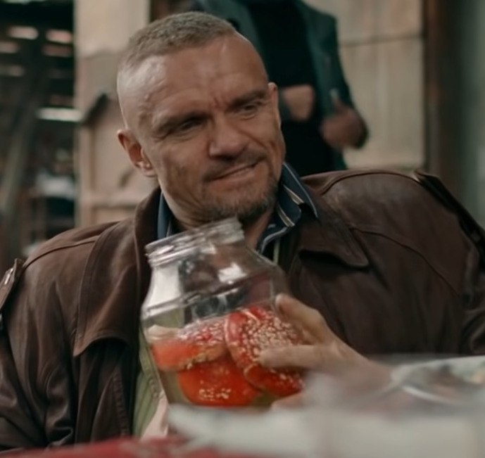

Насчет них расскажет наш колега:
Епифанцев Владимир Георгиевич. Актёр российский актёр театра и кино, кинорежиссёр, театральный режиссёр, телеведущий и режиссёр видеоклипов. Сын советского актёра Георгия Епифанцева. Наиболее известен по ролям офицера в фильме «Зелёный слоник». Принимает долгое время мухоморы,и на этой основе хочет поделиться советами:
- Микродозинг мухоморов очищает шум в голове
- Фокусирует внимание на цели
- Осознание жизни